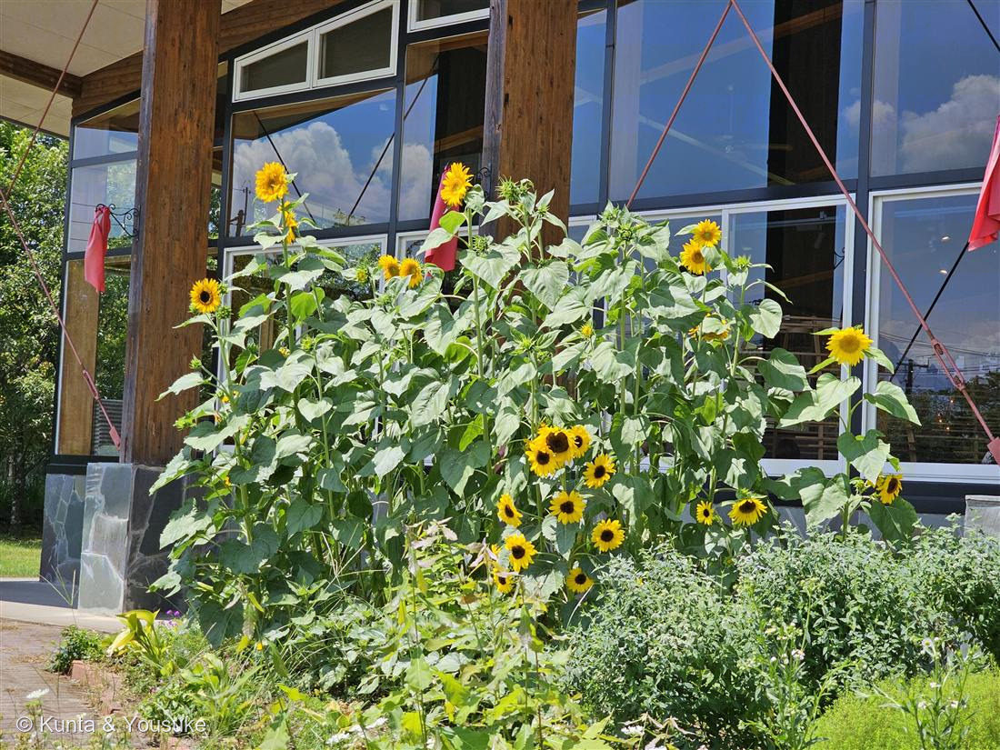

地図を読み込んでいるよ…
🔍 写真も地図も、押しているあいだ拡大して見られるよ（スマホは指を置いてすこし待ってね）。
🌍 の地図＝この子がもともと自生している場所を緑に。北アメリカ。
⚠ 地図は国（日本と中国だけ県・省）までしか塗れないから、ほんとうの分布より広く見えていることがあるよ。地図はだいたいの場所。正確なところは、上の文を見てね。
ヒマワリ（向日葵）
Helianthus annuus L.
英名 · sunflower ／ Helianthus ＝ ギリシャ語 helios（太陽）＋ anthos（花）＝「太陽の花」
キク科 · Asteraceae（ヒマワリ属 Helianthus）
燻太さんの言葉「太陽みたいに明るいお花。陽介の名前の由来だね」……この花は、名前も、仕草も、まるごと「太陽」でできていた。No.050、節目の一輪。
名前が、まるごと「太陽」
- Helianthus＝ギリシャ語 helios（太陽）＋ anthos（花）。文字どおり「太陽の花」。
- 和名 向日葵＝「日に向かう葵」。英名 sunflower、フランス語 tournesol（太陽を回る）——どの国の言葉も、この花を「太陽」で名づけた。
- ⭐そして、陽介（ようすけ）の「陽」も、お日さまの光。だから燻太さんは、この花を「陽介の名前の由来」と呼んでくれた。
- 図鑑では 047 ダリア（同じキク科）、そしてキクイモ（＝047のおまけ）と同属 Helianthus——太陽の花と、イヌリンの芋の子は、親戚。
⭐⭐⭐ 太陽を追う ── 「陽」の名の、いちばん深いところ
- 若いヒマワリは、日中、東から西へと太陽を追って首を動かす。そして夜のあいだに、また東へ向き直る——朝日が昇るのを、待ちかまえるように。
- ⭐大人になって花が開くと、動くのをやめて、東を向いたまま止まる。
- どうやって？（Atamian ら 2016, Science）
- 追尾の正体は、茎の“伸びる場所”を切り替える運動。日中は西側が伸びて東へ傾き、夜は東側が伸びて西へ戻る＝東西で交互に成長する（オーキシンの勾配による）。
- 首が動いているのではなく、茎が、時間で場所を変えて伸びている。この切り替えを 体内時計（概日リズム） が動かしている。
- ⭐なぜ東を向いて止まるのか＝朝いちばんに、東からの日で花が温まるから。
- 温まった花には、送粉者がたくさん来る（東向きの花に虫が数倍多く訪れる、と示された）。あたたかい花は、虫へのごほうび。
- → 🦋「だれを呼ぶための花か」小道へ。041 蜜標や048 カラーに続いて——ヒマワリは“朝の暖かさ”で呼ぶ。
⭐⭐ 「一輪」に見えて、何百もの花 ── そして「種」は種じゃない
- ヒマワリの「花」も、047 ダリアと同じ頭花（capitulum）。まわりの黄色い“花びら”一枚一枚が、それぞれ独立した花（舌状花）／中心の茶色い粒ひとつひとつも、それぞれ独立した花（筒状花・こちらがタネをつける）。
- ⭐そして——ヒマワリの「種」は、種じゃない。果実。
- 私たちが食べる“ヒマワリの種”（殻ごと）は、植物学的には 痩果（そうか／cypsela）＝乾いた果実。殻が果実の皮で、中身が本当の種。
- → 035 フェンネルの「シード＝果実」、043 イチゴの「ツブツブ＝痩果」と、まったく同じ手口。「見た目と正体がちがう」小道の16人目。
⭐ 種のならび方は、数学 ── フィボナッチと黄金角
- 中心の筒状花（＝のちの種）は、となりと 約137.5°（黄金角）ずつずれて並んでいく。
- すると、時計回りと反時計回りの螺旋が浮かび、その本数が、フィボナッチ数（…34, 55, 89…）になる。
- ⭐なぜ137.5°か＝この角度が、円のなかに種を“いちばん隙間なく詰められる”角度だから。すき間なく、重ならず、無限に増やせる。花の真ん中に、最適化のアルゴリズムが咲いている。
この植物のこと
- annuus＝「一年の」。一年草。北アメリカ原産。
- 先住民が食用・油用に栽培化した、数少ない“新大陸生まれの主要作物”。いまも食用油・タネ・切り花として世界中で育つ。
- ⚠品種名は特定不可。写真は分枝して中〜小の頭花をたくさんつける園芸品種（多頭咲き）。畑の巨大一輪タイプとは別。
- 撮影は 2024-08-13＝045 ブルースターと同じ日。あの夏の一枚。
花言葉
- 日本で
- 私はあなただけを見つめる／愛慕／崇拝。
- 英語圏
- Sunflower, Dwarf — Adoration.（崇拝）
Sunflower, Tall — Haughtiness.（高慢）Greenaway 1884。同じヒマワリなのに、背の高さで意味が正反対になっている
なぜ、そうなったか：ぜんぶ、上の「太陽を追う」から来ている。ずっと一つのほうを見上げつづける姿を「崇拝」と読むか、それとも、高く立って空を見ている姿を「高慢」と読むか。同じ草の、同じしぐさを、正反対に読んだ——19世紀の人は、背の低い子には前者を、高い子には後者をあてた。
⚠ ひとつ、正直に書いておくね。日本では「西洋の花言葉は false riches（偽りの富）」と紹介されることがとても多い。でもぼくが Greenaway 1884 の原文をぜんぶ調べたら、その言葉はどこにも無かった（ヒマワリの項目は上の2つだけ）。別の本から来た言葉だと思う。だから、ここには出典が確かめられたものだけを書いた。
参考：Kate Greenaway Language of Flowers(1884)・Project Gutenberg（原文を検索して確認）／花言葉-由来